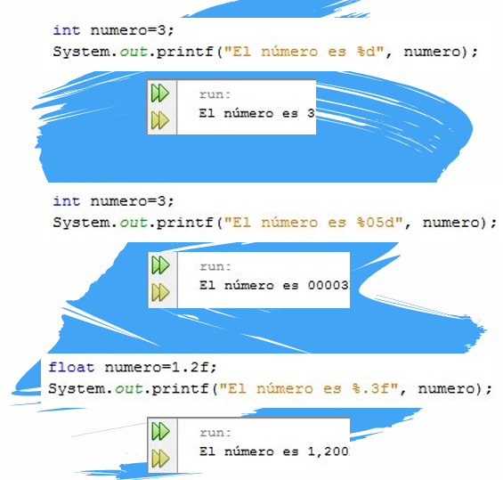

UD1 - Introducción a la Programación en Java
IES 1 Torrevigía · Programación 1º DAW · Francisco J. Guirau López
1.1 Nuestro primer programa en Java
Empezamos viendo un sencillo programa que muestra un texto por pantalla, analizando cada una de las líneas de código.
public class Bienvenido {
//El método main empieza la ejecución de la Aplicación Java
public static void main(String[] args) {
System.out.println("Bienvenid@ a la programación Java");
} //Fin del método main
} //Fin de la clase Bienvenido
Bienvenid@ a la programación Java
1.2. Declaración de clase (class)
Todo programa en Java contiene al menos una clase que nosotros debemos definir. La palabra clave class es la encargada de definirla.
//Definimos la clase Bienvenido
public class Bienvenido {
}
Convención de nombres
Por convención, los nombres de clases comienzan con letra mayúscula, y la primera letra de cada palabra también va en mayúscula.
Ejemplo: EjemploNombreDeClase
Un identificador de clase puede contener:
- Letras y dígitos
- Guiones bajos (
_) y signos de moneda ($) - No puede comenzar con un dígito ni contener espacios
Nombre del archivo
El archivo que contiene la clase debe tener el mismo nombre que la clase con extensión .java.
En nuestro ejemplo: Bienvenido.java
1.3. El método main — Punto de inicio
public static void main(String[] args)
Esta línea es el punto de inicio de toda aplicación Java.
| Elemento | Significado |
|---|---|
public |
Accesible desde cualquier lugar |
static |
Pertenece a la clase, no a un objeto |
void |
No devuelve ningún valor |
main |
Nombre del método de inicio |
String[] args |
Argumentos que se pueden pasar al programa |
1.4. Mostrar información por pantalla
1.4.1 System.out.println
System.out es el objeto de salida estándar. Permite mostrar información en la ventana de comandos.
System.out.println("Bienvenid@ a la programación Java");
println muestra el texto y deja el cursor en una nueva línea. La cadena dentro de los paréntesis es el argumento para el método, “Bienvenid@ a la programación Java”
1.4.2 Métodos de salida: print, println y printf
Las siguientes líneas son equivalentes (todas muestran el mismo mensaje y dejan el cursor en una línea nueva):
System.out.println("Bienvenid@ a la programación Java");
System.out.print("Bienvenid@ a ");
System.out.print("la programación Java\n");
System.out.printf("Bienvenid@ a la programación Java\n");
| Método | Comportamiento |
|---|---|
println |
Muestra el texto y salta a nueva línea automáticamente |
print |
Muestra el texto en la misma línea (usa \n para saltar) |
printf |
Formato avanzado (similar al printf de C) |
1.4.3 Concatenar valores con +
Se pueden unir texto y variables con el operador +:
Aunque se verán las variables y los operadores en profundidad en la siguiente unidad, podemos observar en este caso como se utiliza el operador + para concatenar el texto con el valor de la variable
int resultado = 4;
System.out.println("El resultado es " + resultado);
Salida:
El resultado es 4
1.4.4 Formato con printf
System.out.printf permite especificar el tipo de dato con especificadores de formato:
| Especificador | Tipo de dato |
|---|---|
%d |
Entero (int, long) |
%f |
Real (float, double) |
%c |
Carácter (char) |
%s |
Cadena de texto (String) |
int edad = 20;
double nota = 8.5;
char letra = 'A';
System.out.printf("Edad: %d, Nota: %.1f, Letra: %c%n", edad, nota, letra);
Salida:
Edad: 20, Nota: 8.5, Letra: A

1.5. Entrada de datos desde consola (Scanner)
Para leer datos introducidos por el usuario desde teclado usamos la clase Scanner.
1.5.1 Importar y crear el Scanner
import java.util.Scanner; // (1)
Scanner sc = new Scanner(System.in); // (2)
- Importamos la clase
Scannerdel paquetejava.util - Creamos un objeto
Scannervinculado a la entrada estándar (System.in)
1.5.2 Métodos de lectura
| Método | Lee... |
|---|---|
nextInt() |
Un número entero |
nextDouble() |
Un número real |
nextLine() |
Una línea completa de texto |
next().charAt(0) |
Un solo carácter |
Limpiar el buffer
Después de leer un número con nextInt(), es necesario llamar a sc.nextLine() para limpiar el salto de línea que queda en el buffer, y evitar que la siguiente lectura sea ignorada.
1.5.3 Ejemplo completo de entrada de datos
import java.util.Scanner;
public class EntradaDatos {
public static void main(String[] args) {
Scanner sc = new Scanner(System.in);
System.out.print("Introduce tu nombre: ");
String nombre = sc.nextLine();
System.out.print("Introduce tu edad: ");
int edad = sc.nextInt();
sc.nextLine(); // limpiamos el buffer
System.out.print("Introduce una letra: ");
char letra = sc.next().charAt(0);
System.out.printf("Hola %s, tienes %d años y tu letra es %c%n", nombre, edad, letra);
}
}
Salida (ejemplo):
Introduce tu nombre: Ana
Introduce tu edad: 21
Introduce una letra: J
Hola Ana, tienes 21 años y tu letra es J
Resumen de la unidad
class NombreClase {
public static void main(String[] args) {
// Aquí va el código
}
}
Los conceptos clave de esta unidad son:
- Todo programa Java parte de una clase con un método
main - Usamos
System.out.println/print/printfpara mostrar datos - Usamos
Scannerpara leer datos del usuario - El archivo debe llamarse igual que la clase pública (ej:
Bienvenido.java)